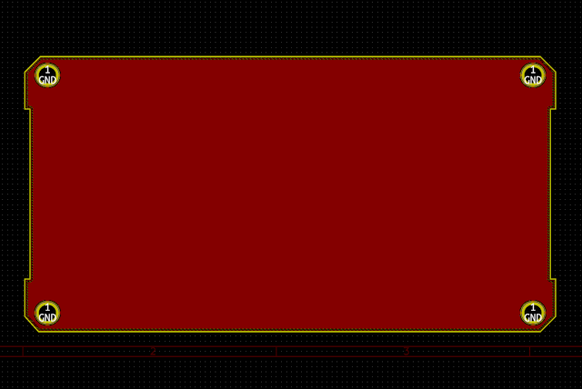

This is the board outline, mounting holes, and copyright notice for all the end plates of the Hermes-Lite 2.0 radio transceiver. The board outline is cut small enough to fit inside the 105mm wide case outline. The mounting holes are spread 0.25mm horizontally to accommodate both the 105mm and 106mm width cases.
The final PCB looks like the following:

© 2019 Roger E Critchlow Jr, Santa Fe, NM, USA
Permission granted to copy and to make derived works.